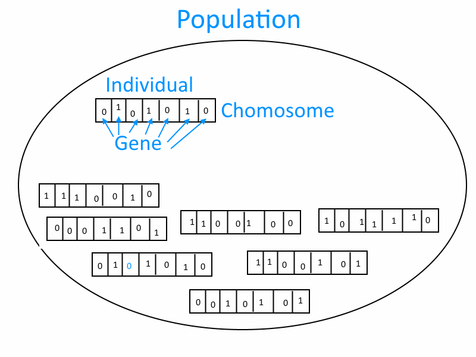

Agenda
- What is a Genetic Algorithm?
- Components ("Lifecycle") in Genetic Algorithms
- Advantages
- Limitations
What is a Genetic Algorithm?
- Method of multi-parameter problem solving, using natural selection principles
- Uses:
- Optimization
- Data Modelling
- Searching
Terminology
- Gene
- Chromosome
- Individual
- Population
- Generation

Components
- Data encoding
- Fitness calculation
- Selection
- Crossover
- Mutation
Data Encoding
- Array-like structure
- Usually booleans or integers, but doesn't have to be
Fitness Calculation
- Takes an individual and calculates a value
- Used to determine how "fit" for the solution the individual is
Selection
- Selecting individuals for the next generation
- Relies on fitness calcuations in some manner
- Example implementations:
- Roulette Wheel Selection
- (Weighted) Rank Selection
- Tournament selection
- Reward-based selection
Crossover
- Combining genes of selected parents
- Example implementations:
- Single-point
- Two-point
- Uniform
Mutation
- Changing gene(s) of an individual, based of random chance
- Helps to increase genetic diversity
- Too much mutation chance can delay finding the optimal solution
Genetic Diversity
- Too little: sub-optimal solution
- Too much: takes longer to converge on a solution
Termination Conditions
- Acceptable fitness threshold reached
- Generation limit
- No/insufficient changes to fitness
Advantages
- Can handle a large number of parameters
- Ability to search large area of solution space
Limitations
- Can get stuck in "local" optimal solution
- Encoding the data and defining the fitness function can be tricky